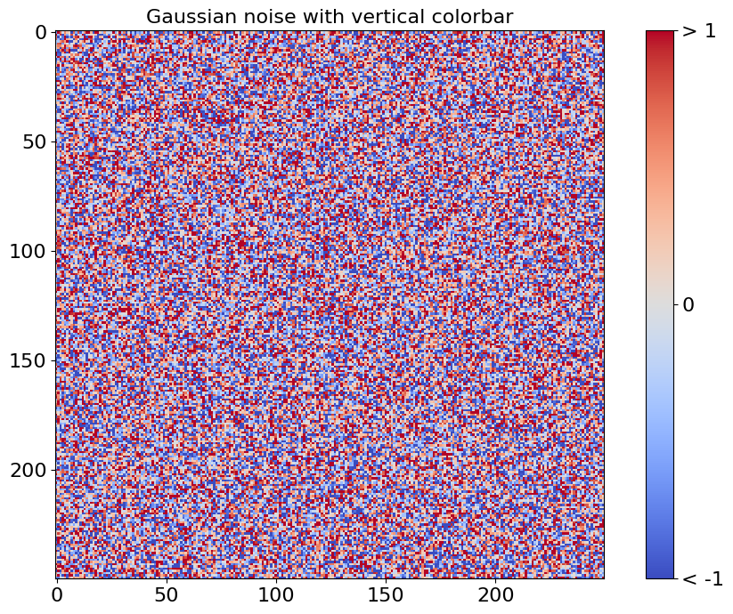

Jupyter Notebooks ¶
The nbsphinx extension allow notebooks to be seemlessly integrated into a Sphinx website. This page demonstrates how notebooks are rendered.
Mathematics ¶
MathJax can use used to render mathematical equations. Equations can be rendered either in their own line using double dollar signs
\[y_{it} = \alpha_i + \gamma_t + \beta x_{it} + \epsilon_{it}\]
or inline using single dollar signs ( \(\LaTeX\) ).
DataFrames ¶
pandas DataFrames are rendered with useful markup.
[1]:
import numpy as np
import pandas as pd
df = pd.DataFrame({'ints': [1, 2, 3],
'floats': [np.pi, np.exp(1), (1+np.sqrt(5))/2],
'strings': ['aardvark', 'bananarama', 'charcuterie' ]})
df
[1]:
| ints | floats | strings | |
|---|---|---|---|
| 0 | 1 | 3.141593 | aardvark |
| 1 | 2 | 2.718282 | bananarama |
| 2 | 3 | 1.618034 | charcuterie |
Plots and Figures ¶
matplotlib can be used to produce plots in notebooks
This example comes from the matplotlib gallery .
[2]:
%matplotlib inline
import numpy as np
import matplotlib.pyplot as plt
from matplotlib import cm
fig, ax = plt.subplots(figsize=(12,8))
data = np.clip(np.random.randn(250, 250), -1, 1)
cax = ax.imshow(data, interpolation='nearest', cmap=cm.coolwarm)
ax.set_title('Gaussian noise with vertical colorbar', fontsize=16)
plt.tick_params(labelsize=16)
# Add colorbar, make sure to specify tick locations to match desired ticklabels
cbar = fig.colorbar(cax, ticks=[-1, 0, 1])
cbar.ax.set_yticklabels(['< -1', '0', '> 1']) # vertically oriented colorbar
cbar.ax.tick_params(labelsize=16)
